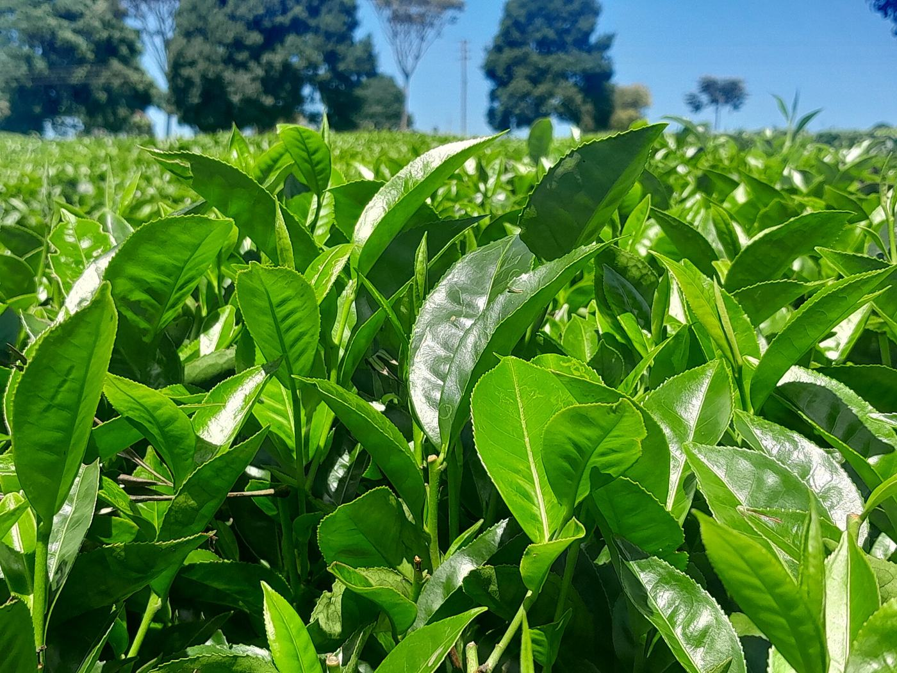
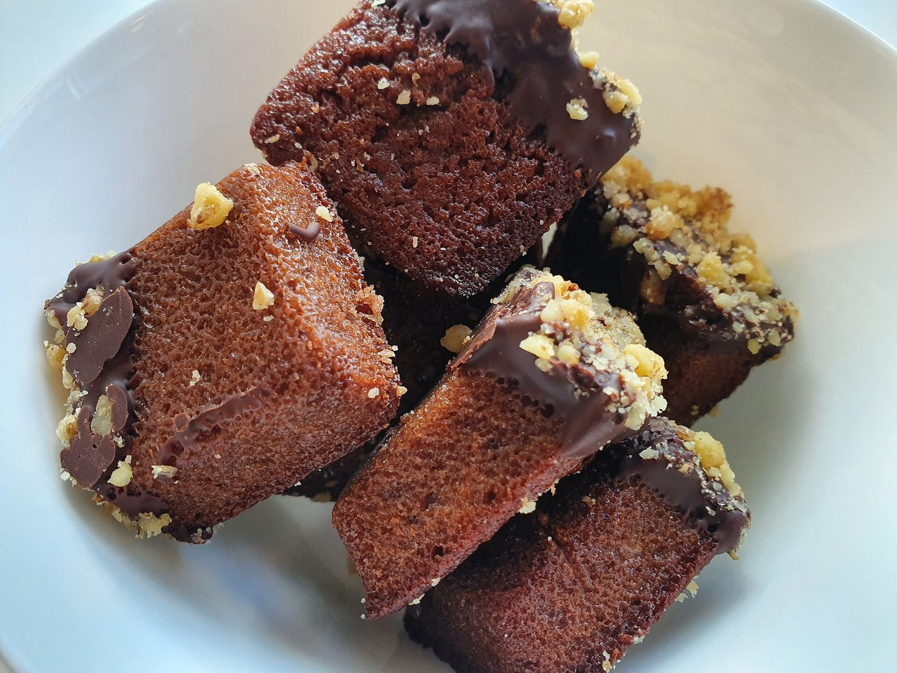
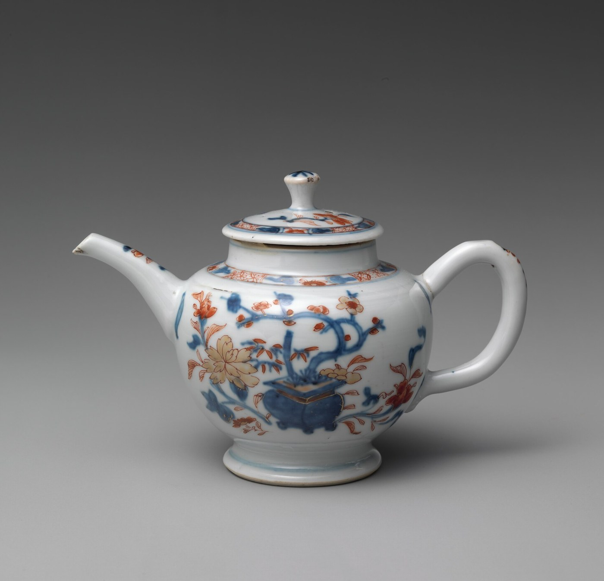
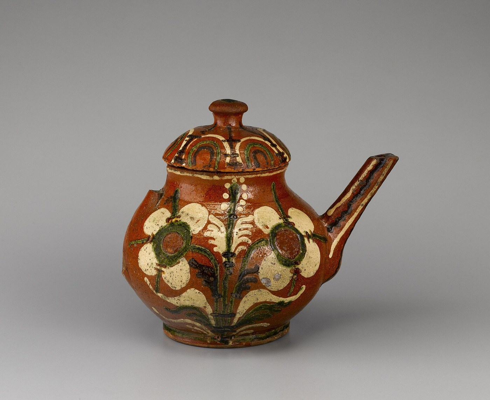
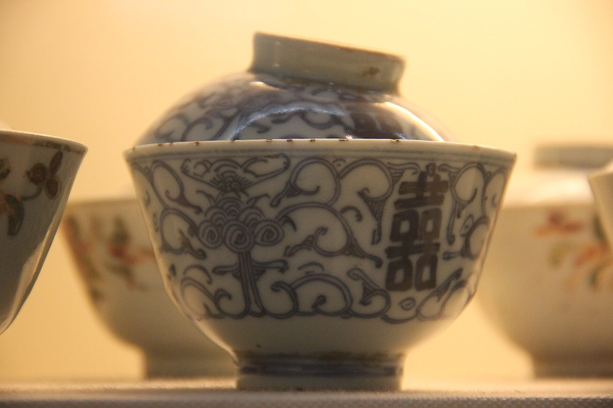
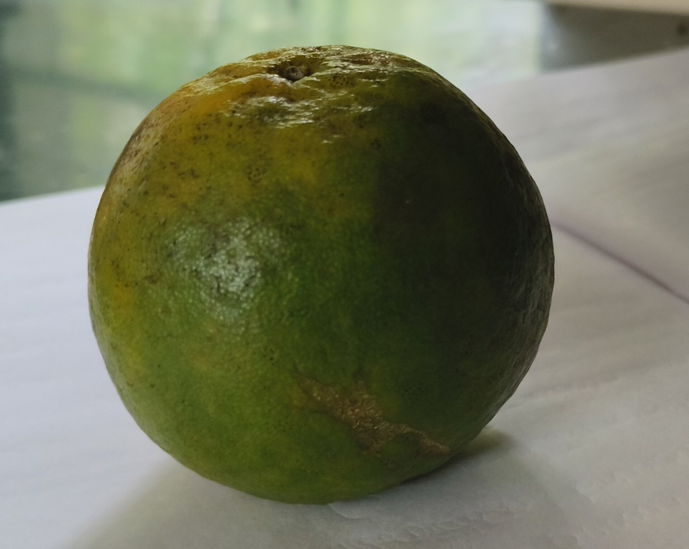
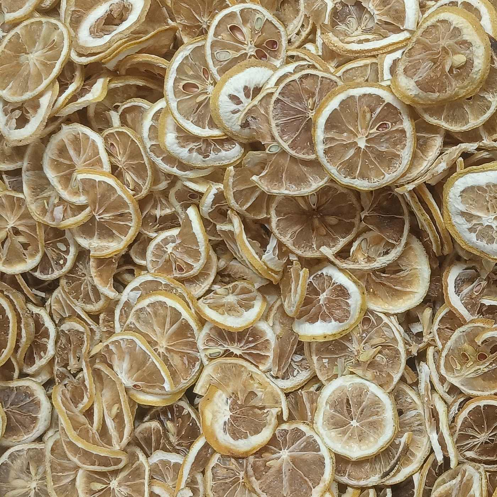

KISSATEN IN KITAMI
アンクルハウス
手づくりのケーキと、淹れたてのコーヒーや紅茶。古き良き喫茶店で、ゆっくりひと息つく時間を。
ABOUT
お店のこと
北見市高栄東町にある喫茶店です。北見駅から歩ける距離にあり、30年以上、地元の人や旅行で訪れた人に親しまれてきたと紹介されています。
古き良き時代の喫茶店らしい、落ち着いた空気が魅力と言われます。ケーキはマスターが考えた手づくりのオリジナルで、いつも5〜6種類ほど。看板はリンゴをはさんだ「シブースト」と紹介されています。
コーヒーは自家焙煎で、豆の銘柄や焙煎度をケーキに合わせて選べるそうです。紅茶やハーブティーもあります。
店名の由来は確認できていません。「親戚のおじさんの家に遊びに来たような、くつろげる店」というイメージは制作側の想像で、お店の公式な説明ではありません。

MENU
メニュー
以下は紹介記事などで確認できた範囲の内容です。価格・営業時間・詳細は準備中です。











VOICE
口コミ(イメージ例)
以下は制作側が作成したイメージ例で、実在のお客様の声ではありません。
イメージ例
ケーキと紅茶のセットで、ほっとできました。店の中が静かで、本を読みながら長居してしまいそうです。
イメージ例
コーヒー豆を選べるのが楽しいです。ケーキに合わせてお願いしたら、ちょうどよい味わいでした。
イメージ例
北見に来たときにまた寄りたいと思う喫茶店です。昔ながらの雰囲気が落ち着きます。
ACCESS
アクセス
| 所在地 | 〒090-0051 北海道北見市高栄東町１丁目２４−１４ |
|---|---|
| 電話 | 準備中 |
| 営業時間 | 準備中 |
| 定休日 | 準備中 |
| @unclehouse_1985_ |